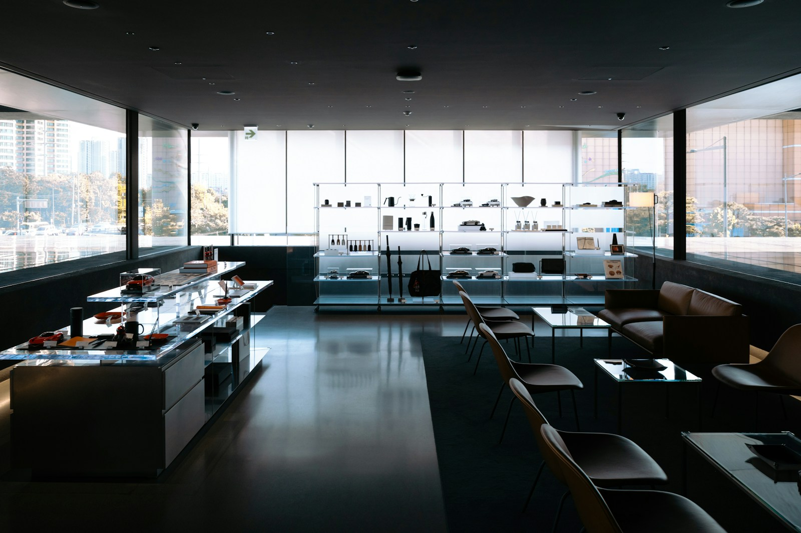

How to Increase Average Order Value in Retail Stores
Most of the advice online about increasing average order value is written for ecommerce. Upsell widgets, cart thresholds, bundled shipping incentives. Useful if you run a Shopify store. Less useful if you're standing behind a register watching customers buy one thing and leave.
• Standard AOV tactics (cross-merchandising, upselling, thresholds) need the right decision environment to work
• Music tempo and mode influence willingness to pay — slower, minor-key selections signal premium positioning
• Lyrical content primed toward self-reward supports premium purchasing
• Measurable: correlate what played with what customers spent

The Tactics You Already Know
The standard approach to increasing AOV in physical retail centers on three strategies.
Cross-merchandising. Place complementary products near each other. Shoes near socks. Dresses near jewelry. Jackets near scarves. The goal is to turn a single-item trip into a multi-item basket by putting the suggestion right in front of the customer.
Staff-driven upselling. Train your staff to suggest a second item at the point of decision. "That jacket looks great on you. Have you seen the belt that goes with it?" This works when your team is good at reading buying signals, and it falls apart when they're not.
Threshold incentives. Spend $75, get free gift wrapping. Spend $100, get 10% off. These pull the customer just past their intended budget when the gap is small.
All three work. None of them address the ambient environment the customer is making decisions inside of. A customer browsing in a space that feels rushed, agitated, or sonically mismatched is less likely to linger, less likely to discover the complementary product, and less likely to respond to the staff suggestion. The decision environment matters as much as the decision architecture.
Cross-merchandising and staff upselling require the customer to be in a browsing state first. A rushed, sonically mismatched environment shortens that window — the tactics never get a chance to work.
The Variable Nobody Talks About
Published research on in-store music consistently finds that tempo and mode influence spending behavior. Slower tempos in minor keys increase time in store and correlate with higher total spend. Genre congruence, music that fits the store's brand, increases customers' willingness to pay premium prices.

But tempo and genre are blunt instruments by themselves. What matters for AOV specifically is the combination of pace, slowing customers down enough to notice more products, and psychological positioning, making the environment feel like a place where quality purchases happen.
A mid-tier apparel store playing generic Top 40 is signaling "fast casual." That same store playing a curated, lower-tempo selection with premium sonic characteristics, rich production, sophisticated arrangements, confident but understated vocals, signals a different positioning. Customers calibrate their expectations to the environment. When the environment signals quality, customers are more willing to trade up from the basic item to the nicer version. When the environment signals mass-market, they default to the cheapest option that meets their need.
What music signals: A store playing generic Top 40 signals "fast casual." The same space playing a curated, lower-tempo selection signals premium positioning — and customers calibrate their willingness to pay accordingly.
The other AOV lever that lives inside your music is lyrical content. A customer hearing lyrics about self-expression, confidence, treating yourself, deserving something good, is cognitively primed in a way that supports premium purchasing. This isn't subliminal manipulation. Customers aren't being tricked. The lyrics contribute to the overall atmosphere the same way your lighting, your displays, and your staff's tone contribute. They're part of the decision environment.
Putting It Into Practice
Entuned generates music for retail stores at the parameter level, controlling tempo, mode, harmonic density, lyrical content, and production characteristics to target specific behavioral outcomes. For AOV, that means deploying what we call the Elevate outcome mode: moderate-to-slow tempos, rich harmonic textures, and lyrical themes oriented toward self-reward, quality, and personal style.
Entuned Elevate mode: Moderate-to-slow tempos, rich harmonic textures, lyrical themes oriented toward self-reward and personal style — parameters calibrated for AOV lift, not just ambiance.
Every store on Entuned gets 2-3 hours of fresh music per week, generated specifically for their brand profile and customer demographic. That solves the playlist fatigue problem, staff hearing the same 40 songs on repeat until they want to quit, while keeping the sonic environment calibrated to the outcome you're targeting.
The measurement piece matters here. If you change your store's music and your AOV moves, you need to know whether the music caused it or whether it was a coincidence. Entuned logs what played, when it played, and correlates that data with your floor performance. Over time, you get a clear picture of which sonic parameters move your specific customers toward larger transactions.
Start with Entuned Free. Deploy outcome-targeted music in your store today.
Start Free